Following the initial isolation of insulin in 1921, diabetic patients could be treated with insulin obtained from the pancreases of cattle and pigs. Unfortunately, some patients developed an allergic reaction to this insulin because its amino acid sequence was not identical to that of human insulin. In the 1970s, an intense research effort began that eventually led to the production of genetically engineered human insulin—the first genetically engineered product to be approved for medical use. To accomplish this feat, researchers first had to determine how insulin is made in the body and then find a way of causing the same process to occur in nonhuman organisms, such as bacteria or yeast cells. Many aspects of these discoveries are presented in this chapter on nucleic acids.
Figure 19.1 Human Insulin Products Now Being Used
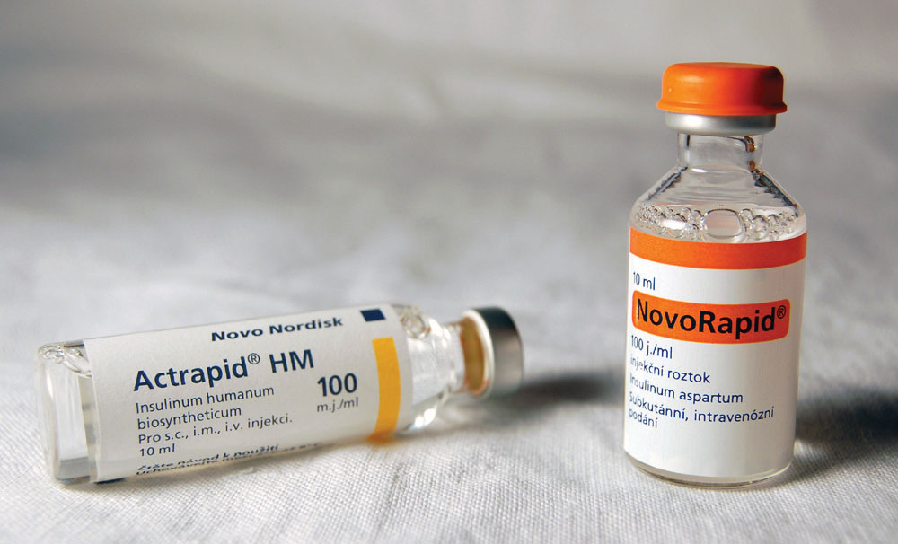Source: Photo courtesy of Mr. Hyde, http://commons.wikimedia.org/wiki/File:Inzul%C3%ADn.jpg.
Dogs have puppies that grow up to be dogs. Foxes have kits that grow up to be foxes. From viruses to humans, each species reproduces after its own kind. Furthermore, within each multicellular organism, every tissue is composed of cells specific to that tissue. What accounts for this specificity at all levels of reproduction? How does a fertilized egg “know” that it should develop into a kangaroo and not a koala? What makes stomach cells produce gastric acid, whereas pancreatic cells produce insulin? The blueprint for the reproduction and the maintenance of each organism is found in the nuclei of its cells, concentrated in elongated, threadlike structures called chromosomesAn elongated, threadlike structure composed of protein and DNA that contains the genetic blueprint.. These complex structures, consisting of DNA and proteins, contain the basic units of heredity, called genesThe basic unit of heredity.. The number of chromosomes (and genes) varies with each species. Human body cells have 23 pairs of chromosomes having 20,000–40,000 different genes.
Sperm and egg cells contain only a single copy of each chromosome; that is, they contain only one member of each chromosome pair. Thus, in sexual reproduction, the entire complement of chromosomes is achieved only when an egg and sperm combine. A new individual receives half its hereditary material from each parent.
Calling the unit of heredity a “gene” merely gives it a name. But what really are genes and how is the information they contain expressed? One definition of a gene is that it is a segment of DNA that constitutes the code for a specific polypeptide. If genes are segments of DNA, we need to learn more about the structure and physiological function of DNA. We begin by looking at the small molecules needed to form DNA and RNA (ribonucleic acid)—the nucleotides.
The repeating, or monomer, units that are linked together to form nucleic acids are known as nucleotidesA monomer unit that is linked together to form nucleic acids.. The deoxyribonucleic acid (DNA) of a typical mammalian cell contains about 3 × 109 nucleotides. Nucleotides can be further broken down to phosphoric acid (H3PO4), a pentose sugar (a sugar with five carbon atoms), and a nitrogenous base (a base containing nitrogen atoms).
If the pentose sugar is ribose, the nucleotide is more specifically referred to as a ribonucleotide, and the resulting nucleic acid is ribonucleic acid (RNA). If the sugar is 2-deoxyribose, the nucleotide is a deoxyribonucleotide, and the nucleic acid is DNA.
The nitrogenous bases found in nucleotides are classified as pyrimidinesA heterocyclic amine with two nitrogen atoms in a six-member ring. or purinesA heterocyclic amine consisting of a pyrimidine ring fused to a five-member ring with two nitrogen atoms.. Pyrimidines are heterocyclic amines with two nitrogen atoms in a six-member ring and include uracil, thymine, and cytosine. (For more information about heterocyclic amines, see Chapter 15 "Organic Acids and Bases and Some of Their Derivatives", Section 15.13 "Amines as Bases".) Purines are heterocyclic amines consisting of a pyrimidine ring fused to a five-member ring with two nitrogen atoms. Adenine and guanine are the major purines found in nucleic acids (Figure 19.2 "The Nitrogenous Bases Found in DNA and RNA").
Figure 19.2 The Nitrogenous Bases Found in DNA and RNA

The formation of a bond between C1′ of the pentose sugar and N1 of the pyrimidine base or N9 of the purine base joins the pentose sugar to the nitrogenous base. In the formation of this bond, a molecule of water is removed. Table 19.1 "Composition of Nucleotides in DNA and RNA" summarizes the similarities and differences in the composition of nucleotides in DNA and RNA.
The numbering convention is that primed numbers designate the atoms of the pentose ring, and unprimed numbers designate the atoms of the purine or pyrimidine ring.
Table 19.1 Composition of Nucleotides in DNA and RNA
| Composition | DNA | RNA |
|---|---|---|
| purine bases | adenine and guanine | adenine and guanine |
| pyrimidine bases | cytosine and thymine | cytosine and uracil |
| pentose sugar | 2-deoxyribose | ribose |
| inorganic acid | phosphoric acid (H3PO4) | H3PO4 |
The names and structures of the major ribonucleotides and one of the deoxyribonucleotides are given in Figure 19.3 "The Pyrimidine and Purine Nucleotides".
Figure 19.3 The Pyrimidine and Purine Nucleotides
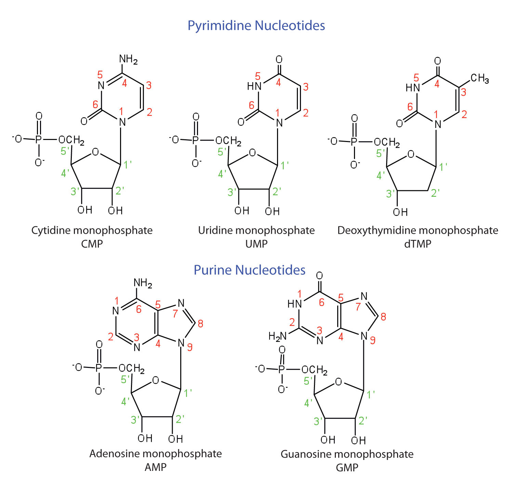Apart from being the monomer units of DNA and RNA, the nucleotides and some of their derivatives have other functions as well. Adenosine diphosphate (ADP) and adenosine triphosphate (ATP), shown in Figure 19.4 "Structures of Two Important Adenine-Containing Nucleotides", have a role in cell metabolism that we will discuss in Chapter 20 "Energy Metabolism". Moreover, a number of coenzymes, including flavin adenine dinucleotide (FAD), nicotinamide adenine dinucleotide (NAD+), and coenzyme A, contain adenine nucleotides as structural components. (For more information on coenzymes, see Chapter 18 "Amino Acids, Proteins, and Enzymes", Section 18.9 "Enzyme Cofactors and Vitamins".)
Figure 19.4 Structures of Two Important Adenine-Containing Nucleotides
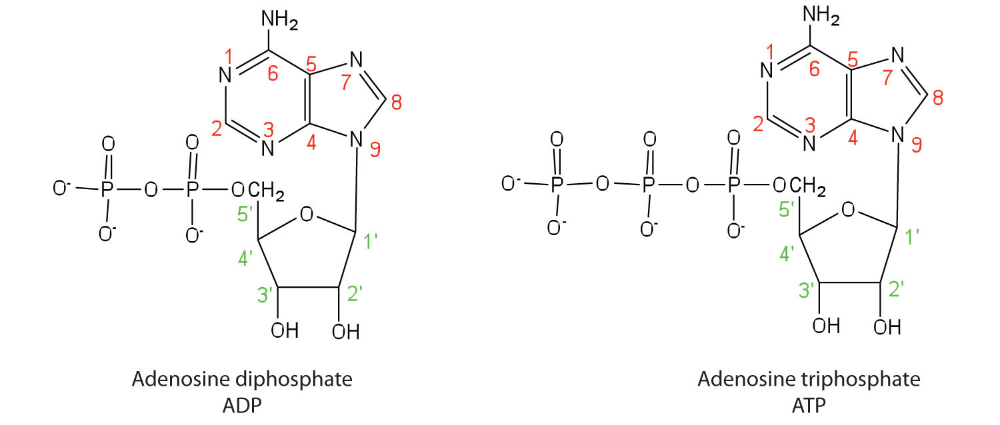Identify the three molecules needed to form the nucleotides in each nucleic acid.
Classify each compound as a pentose sugar, a purine, or a pyrimidine.
What is the sugar unit in each nucleic acid?
Identify the major nitrogenous bases in each nucleic acid.
For each structure, circle the sugar unit and identify the nucleotide as a ribonucleotide or a deoxyribonucleotide.
For each structure, circle the sugar unit and identify the nucleotide as a ribonucleotide or a deoxyribonucleotide.
For each structure, circle the nitrogenous base and identify it as a purine or pyrimidine.
For each structure, circle the nitrogenous base and identify it as a purine or pyrimidine.
Nucleic acidsA polymer formed by linking nucleotides together. are large polymers formed by linking nucleotides together and are found in every cell. Deoxyribonucleic acid (DNA)The nucleic acid that stores genetic information. is the nucleic acid that stores genetic information. If all the DNA in a typical mammalian cell were stretched out end to end, it would extend more than 2 m. Ribonucleic acid (RNA)The nucleic acid responsible for using the genetic information encoded in DNA. is the nucleic acid responsible for using the genetic information encoded in DNA to produce the thousands of proteins found in living organisms.
Nucleotides are joined together through the phosphate group of one nucleotide connecting in an ester linkage to the OH group on the third carbon atom of the sugar unit of a second nucleotide. This unit joins to a third nucleotide, and the process is repeated to produce a long nucleic acid chain (Figure 19.5 "Structure of a Segment of DNA"). The backbone of the chain consists of alternating phosphate and sugar units (2-deoxyribose in DNA and ribose in RNA). The purine and pyrimidine bases branch off this backbone.
Each phosphate group has one acidic hydrogen atom that is ionized at physiological pH. This is why these compounds are known as nucleic acids.
Figure 19.5 Structure of a Segment of DNA
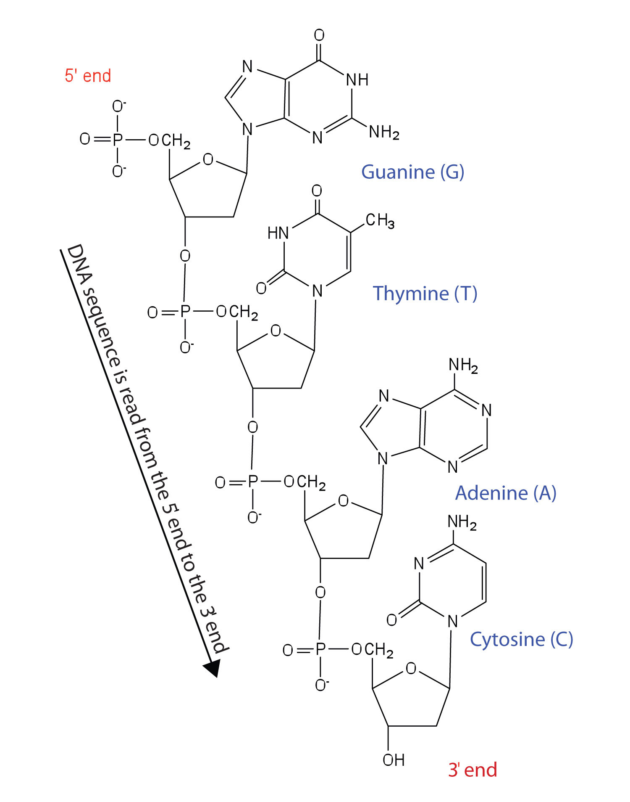A similar segment of RNA would have OH groups on each C2′, and uracil would replace thymine.
Like proteins, nucleic acids have a primary structure that is defined as the sequence of their nucleotides. Unlike proteins, which have 20 different kinds of amino acids, there are only 4 different kinds of nucleotides in nucleic acids. For amino acid sequences in proteins, the convention is to write the amino acids in order starting with the N-terminal amino acid. In writing nucleotide sequences for nucleic acids, the convention is to write the nucleotides (usually using the one-letter abbreviations for the bases, shown in Figure 19.5 "Structure of a Segment of DNA") starting with the nucleotide having a free phosphate group, which is known as the 5′ end, and indicate the nucleotides in order. For DNA, a lowercase d is often written in front of the sequence to indicate that the monomers are deoxyribonucleotides. The final nucleotide has a free OH group on the 3′ carbon atom and is called the 3′ end. The sequence of nucleotides in the DNA segment shown in Figure 19.5 "Structure of a Segment of DNA" would be written 5′-dG-dT-dA-dC-3′, which is often further abbreviated to dGTAC or just GTAC.
The three-dimensional structure of DNA was the subject of an intensive research effort in the late 1940s to early 1950s. Initial work revealed that the polymer had a regular repeating structure. In 1950, Erwin Chargaff of Columbia University showed that the molar amount of adenine (A) in DNA was always equal to that of thymine (T). Similarly, he showed that the molar amount of guanine (G) was the same as that of cytosine (C). Chargaff drew no conclusions from his work, but others soon did.
At Cambridge University in 1953, James D. Watson and Francis Crick announced that they had a model for the secondary structure of DNA. Using the information from Chargaff’s experiments (as well as other experiments) and data from the X ray studies of Rosalind Franklin (which involved sophisticated chemistry, physics, and mathematics), Watson and Crick worked with models that were not unlike a child’s construction set and finally concluded that DNA is composed of two nucleic acid chains running antiparallel to one another—that is, side-by-side with the 5′ end of one chain next to the 3′ end of the other. Moreover, as their model showed, the two chains are twisted to form a double helixThe secondary structure of DNA.—a structure that can be compared to a spiral staircase, with the phosphate and sugar groups (the backbone of the nucleic acid polymer) representing the outside edges of the staircase. The purine and pyrimidine bases face the inside of the helix, with guanine always opposite cytosine and adenine always opposite thymine. These specific base pairs, referred to as complementary basesSpecific base pairings in the DNA double helix., are the steps, or treads, in our staircase analogy (Figure 19.6 "DNA Double Helix").
Figure 19.6 DNA Double Helix
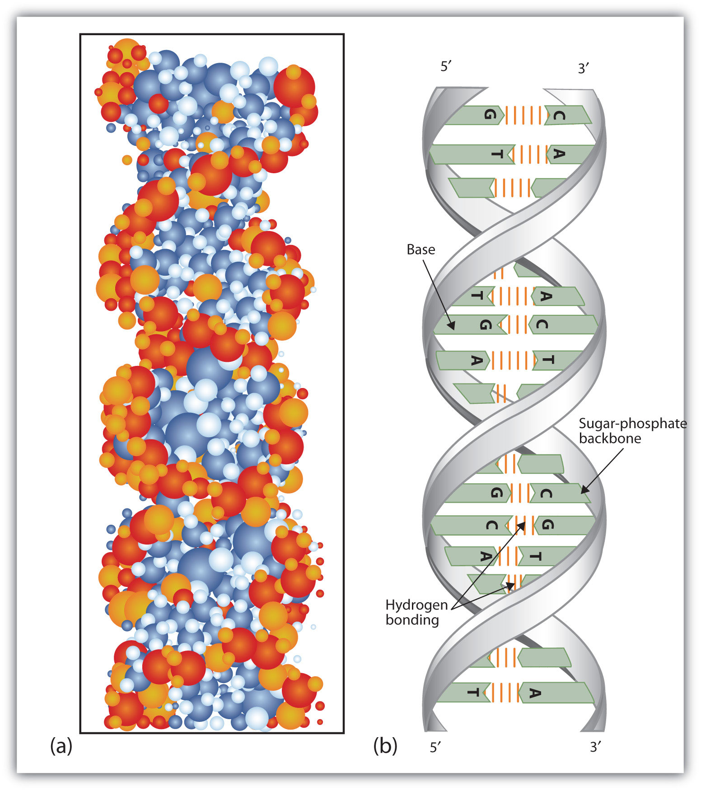(a) This represents a computer-generated model of the DNA double helix. (b) This represents a schematic representation of the double helix, showing the complementary bases.
The structure proposed by Watson and Crick provided clues to the mechanisms by which cells are able to divide into two identical, functioning daughter cells; how genetic data are passed to new generations; and even how proteins are built to required specifications. All these abilities depend on the pairing of complementary bases. Figure 19.7 "Complementary Base Pairing" shows the two sets of base pairs and illustrates two things. First, a pyrimidine is paired with a purine in each case, so that the long dimensions of both pairs are identical (1.08 nm). If two pyrimidines were paired or two purines were paired, the two pyrimidines would take up less space than a purine and a pyrimidine, and the two purines would take up more space, as illustrated in Figure 19.8 "Difference in Widths of Possible Base Pairs". If these pairings were ever to occur, the structure of DNA would be like a staircase made with stairs of different widths. For the two strands of the double helix to fit neatly, a pyrimidine must always be paired with a purine. The second thing you should notice in Figure 19.7 "Complementary Base Pairing" is that the correct pairing enables formation of three instances of hydrogen bonding between guanine and cytosine and two between adenine and thymine. The additive contribution of this hydrogen bonding imparts great stability to the DNA double helix.
Figure 19.7 Complementary Base Pairing
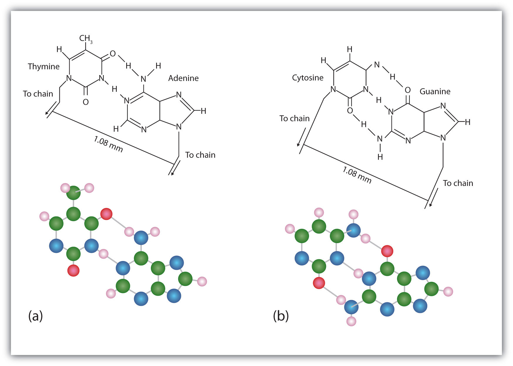Complementary bases engage in hydrogen bonding with one another: (a) thymine and adenine; (b) cytosine and guanine.
Figure 19.8 Difference in Widths of Possible Base Pairs
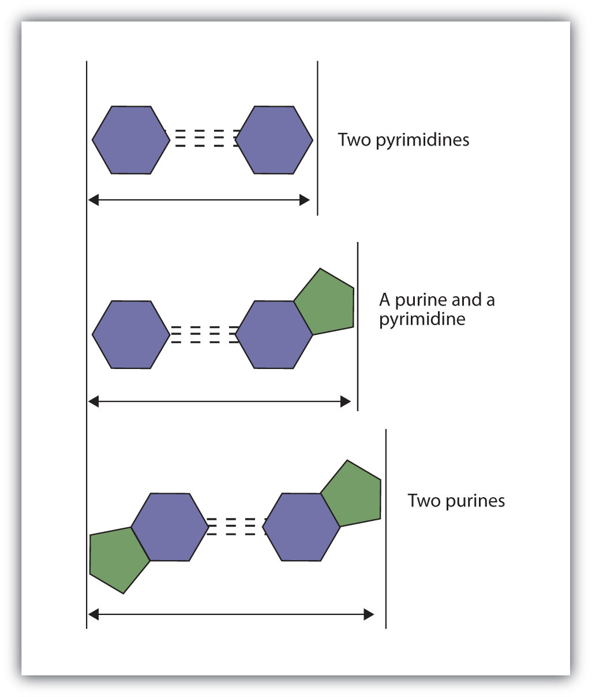
What are complementary bases?
Why is it structurally important that a purine base always pair with a pyrimidine base in the DNA double helix?
the specific base pairings in the DNA double helix in which guanine is paired with cytosine and adenine is paired with thymine
The width of the DNA double helix is kept at a constant width, rather than narrowing (if two pyrimidines were across from each other) or widening (if two purines were across from each other).
For this short RNA segment,
write the nucleotide sequence of this RNA segment.
For this short DNA segment,
write the nucleotide sequence of this DNA segment.
Which nitrogenous base in DNA pairs with each nitrogenous base?
Which nitrogenous base in RNA pairs with each nitrogenous base?
How many hydrogen bonds can form between the two strands in the short DNA segment shown below?
5′ ATGCGACTA 3′ 3′ TACGCTGAT 5′How many hydrogen bonds can form between the two strands in the short DNA segment shown below?
5′ CGATGAGCC 3′ 3′ GCTACTCGG 5′c. ACU
22 (2 between each AT base pair and 3 between each GC base pair)
We previously stated that deoxyribonucleic acid (DNA) stores genetic information, while ribonucleic acid (RNA) is responsible for transmitting or expressing genetic information by directing the synthesis of thousands of proteins found in living organisms. But how do the nucleic acids perform these functions? Three processes are required: (1) replication, in which new copies of DNA are made; (2) transcription, in which a segment of DNA is used to produce RNA; and (3) translation, in which the information in RNA is translated into a protein sequence. (For more information on protein sequences, see Section 19.4 "Protein Synthesis and the Genetic Code".)
New cells are continuously forming in the body through the process of cell division. For this to happen, the DNA in a dividing cell must be copied in a process known as replicationThe process in which the DNA in a dividing cell is copied.. The complementary base pairing of the double helix provides a ready model for how genetic replication occurs. If the two chains of the double helix are pulled apart, disrupting the hydrogen bonding between base pairs, each chain can act as a template, or pattern, for the synthesis of a new complementary DNA chain.
The nucleus contains all the necessary enzymes, proteins, and nucleotides required for this synthesis. A short segment of DNA is “unzipped,” so that the two strands in the segment are separated to serve as templates for new DNA. DNA polymerase, an enzyme, recognizes each base in a template strand and matches it to the complementary base in a free nucleotide. The enzyme then catalyzes the formation of an ester bond between the 5′ phosphate group of the nucleotide and the 3′ OH end of the new, growing DNA chain. In this way, each strand of the original DNA molecule is used to produce a duplicate of its former partner (Figure 19.9 "A Schematic Diagram of DNA Replication"). Whatever information was encoded in the original DNA double helix is now contained in each replicate helix. When the cell divides, each daughter cell gets one of these replicates and thus all of the information that was originally possessed by the parent cell.
Figure 19.9 A Schematic Diagram of DNA Replication
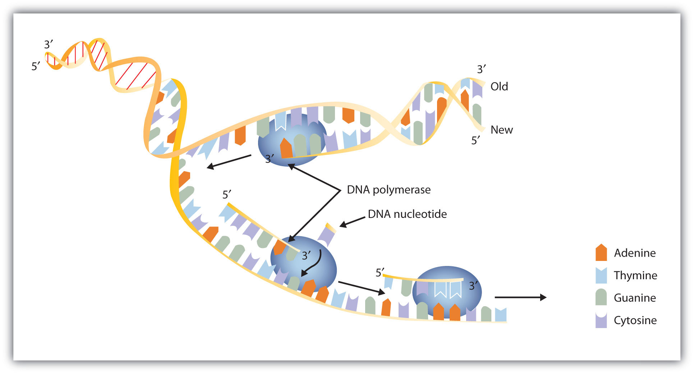DNA replication occurs by the sequential unzipping of segments of the double helix. Each new nucleotide is brought into position by DNA polymerase and is added to the growing strand by the formation of a phosphate ester bond. Thus, two double helixes form from one, and each consists of one old strand and one new strand, an outcome called semiconservative replications. (This representation is simplified; many more proteins are involved in replication.)
A segment of one strand from a DNA molecule has the sequence 5′‑TCCATGAGTTGA‑3′. What is the sequence of nucleotides in the opposite, or complementary, DNA chain?
Solution
Knowing that the two strands are antiparallel and that T base pairs with A, while C base pairs with G, the sequence of the complementary strand will be 3′‑AGGTACTCAACT‑5′ (can also be written as TCAACTCATGGA).
A segment of one strand from a DNA molecule has the sequence 5′‑CCAGTGAATTGCCTAT‑3′. What is the sequence of nucleotides in the opposite, or complementary, DNA chain?
What do we mean when we say information is encoded in the DNA molecule? An organism’s DNA can be compared to a book containing directions for assembling a model airplane or for knitting a sweater. Letters of the alphabet are arranged into words, and these words direct the individual to perform certain operations with specific materials. If all the directions are followed correctly, a model airplane or sweater is produced.
In DNA, the particular sequences of nucleotides along the chains encode the directions for building an organism. Just as saw means one thing in English and was means another, the sequence of bases CGT means one thing, and TGC means something different. Although there are only four letters—the four nucleotides—in the genetic code of DNA, their sequencing along the DNA strands can vary so widely that information storage is essentially unlimited.
For the hereditary information in DNA to be useful, it must be “expressed,” that is, used to direct the growth and functioning of an organism. The first step in the processes that constitute DNA expression is the synthesis of RNA, by a template mechanism that is in many ways analogous to DNA replication. Because the RNA that is synthesized is a complementary copy of information contained in DNA, RNA synthesis is referred to as transcriptionThe process in which RNA is synthesized from a DNA template..
There are three key differences between replication and transcription: (1) RNA molecules are much shorter than DNA molecules; only a portion of one DNA strand is copied or transcribed to make an RNA molecule. (2) RNA is built from ribonucleotides rather than deoxyribonucleotides. (3) The newly synthesized RNA strand does not remain associated with the DNA sequence it was transcribed from.
The DNA sequence that is transcribed to make RNA is called the template strand, while the complementary sequence on the other DNA strand is called the coding or informational strand. To initiate RNA synthesis, the two DNA strands unwind at specific sites along the DNA molecule. Ribonucleotides are attracted to the uncoiling region of the DNA molecule, beginning at the 3′ end of the template strand, according to the rules of base pairing. Thymine in DNA calls for adenine in RNA, cytosine specifies guanine, guanine calls for cytosine, and adenine requires uracil. RNA polymerase—an enzyme—binds the complementary ribonucleotide and catalyzes the formation of the ester linkage between ribonucleotides, a reaction very similar to that catalyzed by DNA polymerase (Figure 19.10 "A Schematic Diagram of RNA Transcription from a DNA Template"). Synthesis of the RNA strand takes place in the 5′ to 3′ direction, antiparallel to the template strand. Only a short segment of the RNA molecule is hydrogen-bonded to the template strand at any time during transcription. When transcription is completed, the RNA is released, and the DNA helix reforms. The nucleotide sequence of the RNA strand formed during transcription is identical to that of the corresponding coding strand of the DNA, except that U replaces T.
Figure 19.10 A Schematic Diagram of RNA Transcription from a DNA Template
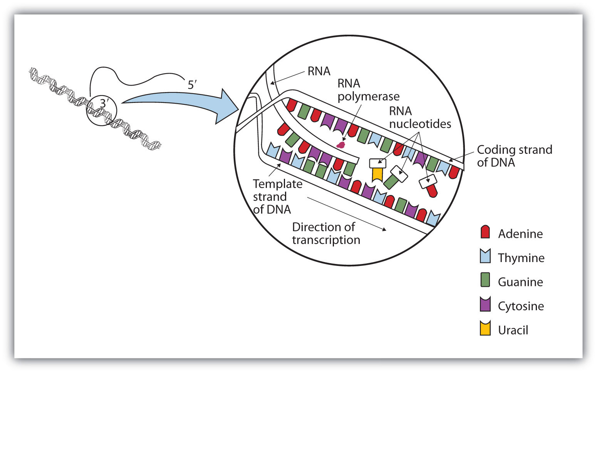The representation of RNA polymerase is proportionately much smaller than the actual molecule, which encompasses about 50 nucleotides at a time.
A portion of the template strand of a gene has the sequence 5′‑TCCATGAGTTGA‑3′. What is the sequence of nucleotides in the RNA that is formed from this template?
Solution
Four things must be remembered in answering this question: (1) the DNA strand and the RNA strand being synthesized are antiparallel; (2) RNA is synthesized in a 5′ to 3′ direction, so transcription begins at the 3′ end of the template strand; (3) ribonucleotides are used in place of deoxyribonucleotides; and (4) thymine (T) base pairs with adenine (A), A base pairs with uracil (U; in RNA), and cytosine (C) base pairs with guanine (G). The sequence is determined to be 3′‑AGGUACUCAACU‑5′ (can also be written as 5′‑UCAACUCAUGGA‑3′).
A portion of the template strand of a gene has the sequence 5′‑CCAGTGAATTGCCTAT‑3′. What is the sequence of nucleotides in the RNA that is formed from this template?
Three types of RNA are formed during transcription: messenger RNA (mRNA), ribosomal RNA (rRNA), and transfer RNA (tRNA). These three types of RNA differ in function, size, and percentage of the total cell RNA (Table 19.2 "Properties of Cellular RNA in "). mRNA makes up only a small percent of the total amount of RNA within the cell, primarily because each molecule of mRNA exists for a relatively short time; it is continuously being degraded and resynthesized. The molecular dimensions of the mRNA molecule vary according to the amount of genetic information a given molecule contains. After transcription, which takes place in the nucleus, the mRNA passes into the cytoplasm, carrying the genetic message from DNA to the ribosomes, the sites of protein synthesis. In Section 19.5 "Mutations and Genetic Diseases", we shall see how mRNA directly determines the sequence of amino acids during protein synthesis.
Table 19.2 Properties of Cellular RNA in Escherichia coli
| Type | Function | Approximate Number of Nucleotides | Percentage of Total Cell RNA |
|---|---|---|---|
| mRNA | codes for proteins | 100–6,000 | ~3 |
| rRNA | component of ribosomes | 120–2900 | 83 |
| tRNA | adapter molecule that brings the amino acid to the ribosome | 75–90 | 14 |
RibosomesA cellular substructure where proteins are synthesized. are cellular substructures where proteins are synthesized. They contain about 65% rRNA and 35% protein, held together by numerous noncovalent interactions, such as hydrogen bonding, in an overall structure consisting of two globular particles of unequal size.
Molecules of tRNA, which bring amino acids (one at a time) to the ribosomes for the construction of proteins, differ from one another in the kinds of amino acid each is specifically designed to carry. A set of three nucleotides, known as a codonA set of three nucleotides on the mRNA that specifies a particular amino acid., on the mRNA determines which kind of tRNA will add its amino acid to the growing chain. (For more information on sequences, see Section 19.4 "Protein Synthesis and the Genetic Code".) Each of the 20 amino acids found in proteins has at least one corresponding kind of tRNA, and most amino acids have more than one.
The two-dimensional structure of a tRNA molecule has three distinctive loops, reminiscent of a cloverleaf (Figure 19.11 "Transfer RNA"). On one loop is a sequence of three nucleotides that varies for each kind of tRNA. This triplet, called the anticodonA set of three nucleotides on the tRNA that is complementary to, and pairs with, the codon on the mRNA., is complementary to and pairs with the codon on the mRNA. At the opposite end of the molecule is the acceptor stem, where the amino acid is attached.
Figure 19.11 Transfer RNA
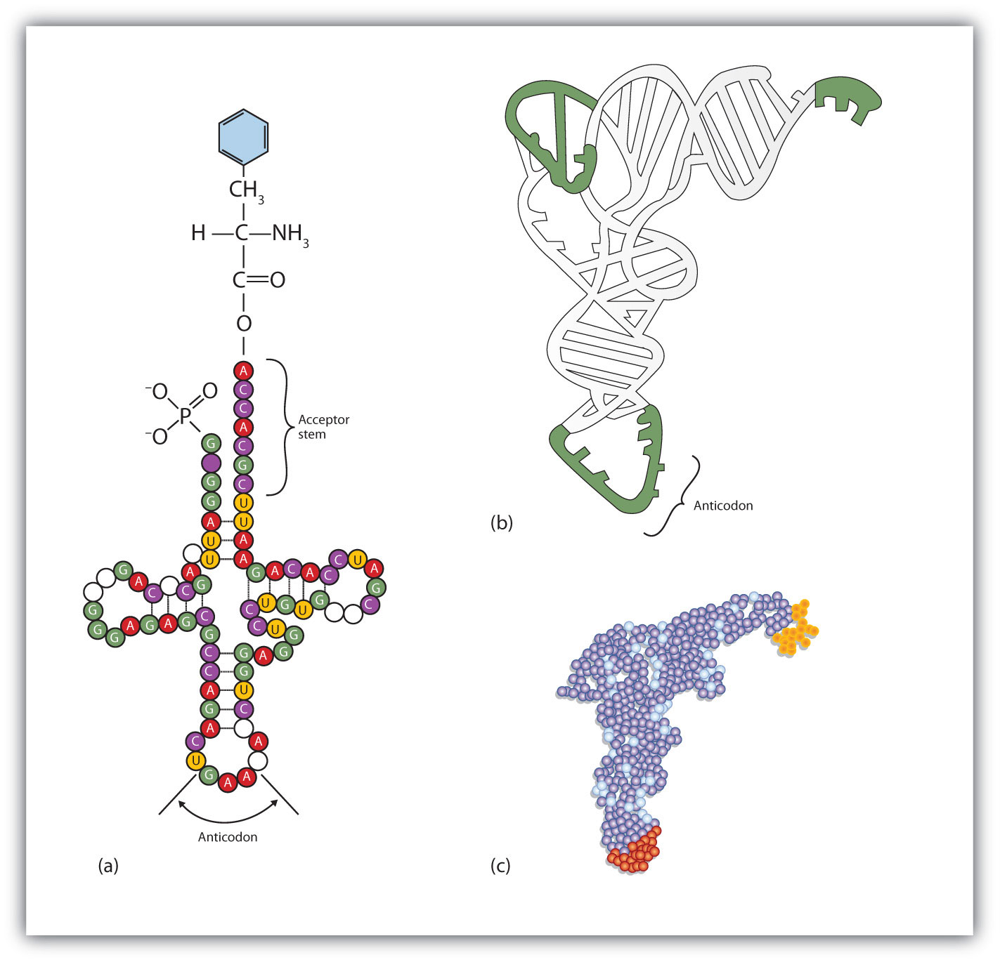(a) In the two-dimensional structure of a yeast tRNA molecule for phenylalanine, the amino acid binds to the acceptor stem located at the 3′ end of the tRNA primary sequence. (The nucleotides that are not specifically identified here are slightly altered analogs of the four common ribonucleotides A, U, C, and G.) (b) In the three-dimensional structure of yeast phenylalanine tRNA, note that the anticodon loop is at the bottom and the acceptor stem is at the top right. (c) This shows a space-filling model of the tRNA.
In DNA replication, a parent DNA molecule produces two daughter molecules. What is the fate of each strand of the parent DNA double helix?
What is the role of DNA in transcription? What is produced in transcription?
Which type of RNA contains the codon? Which type of RNA contains the anticodon?
Each strand of the parent DNA double helix remains associated with the newly synthesized DNA strand.
DNA serves as a template for the synthesis of an RNA strand (the product of transcription).
codon: mRNA; anticodon: tRNA
Describe how replication and transcription are similar.
Describe how replication and transcription differ.
A portion of the coding strand for a given gene has the sequence 5′‑ATGAGCGACTTTGCGGGATTA‑3′.
A portion of the coding strand for a given gene has the sequence 5′‑ATGGCAATCCTCAAACGCTGT‑3′.
Both processes require a template from which a complementary strand is synthesized.
One of the definitions of a gene is as follows: a segment of deoxyribonucleic acid (DNA) carrying the code for a specific polypeptide. Each molecule of messenger RNA (mRNA) is a transcribed copy of a gene that is used by a cell for synthesizing a polypeptide chain. If a protein contains two or more different polypeptide chains, each chain is coded by a different gene. We turn now to the question of how the sequence of nucleotides in a molecule of ribonucleic acid (RNA) is translated into an amino acid sequence.
How can a molecule containing just 4 different nucleotides specify the sequence of the 20 amino acids that occur in proteins? If each nucleotide coded for 1 amino acid, then obviously the nucleic acids could code for only 4 amino acids. What if amino acids were coded for by groups of 2 nucleotides? There are 42, or 16, different combinations of 2 nucleotides (AA, AU, AC, AG, UU, and so on). Such a code is more extensive but still not adequate to code for 20 amino acids. However, if the nucleotides are arranged in groups of 3, the number of different possible combinations is 43, or 64. Here we have a code that is extensive enough to direct the synthesis of the primary structure of a protein molecule.
The genetic codeThe identification of each group of three nucleotides and its particular amino acid. can therefore be described as the identification of each group of three nucleotides and its particular amino acid. The sequence of these triplet groups in the mRNA dictates the sequence of the amino acids in the protein. Each individual three-nucleotide coding unit, as we have seen, is called a codon.
Protein synthesis is accomplished by orderly interactions between mRNA and the other ribonucleic acids (transfer RNA [tRNA] and ribosomal RNA [rRNA]), the ribosome, and more than 100 enzymes. The mRNA formed in the nucleus during transcription is transported across the nuclear membrane into the cytoplasm to the ribosomes—carrying with it the genetic instructions. The process in which the information encoded in the mRNA is used to direct the sequencing of amino acids and thus ultimately to synthesize a protein is referred to as translationThe process in which the information encoded in mRNA is used to direct the sequencing of amino acids to synthesize a protein..
Before an amino acid can be incorporated into a polypeptide chain, it must be attached to its unique tRNA. This crucial process requires an enzyme known as aminoacyl-tRNA synthetase (Figure 19.12 "Binding of an Amino Acid to Its tRNA"). There is a specific aminoacyl-tRNA synthetase for each amino acid. This high degree of specificity is vital to the incorporation of the correct amino acid into a protein. After the amino acid molecule has been bound to its tRNA carrier, protein synthesis can take place. Figure 19.13 "The Elongation Steps in Protein Synthesis" depicts a schematic stepwise representation of this all-important process.
Figure 19.12 Binding of an Amino Acid to Its tRNA
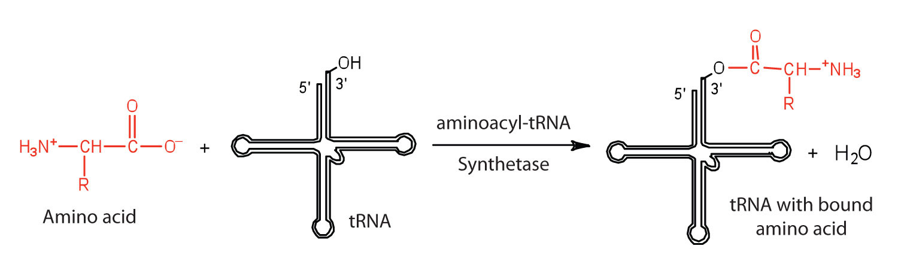Figure 19.13 The Elongation Steps in Protein Synthesis
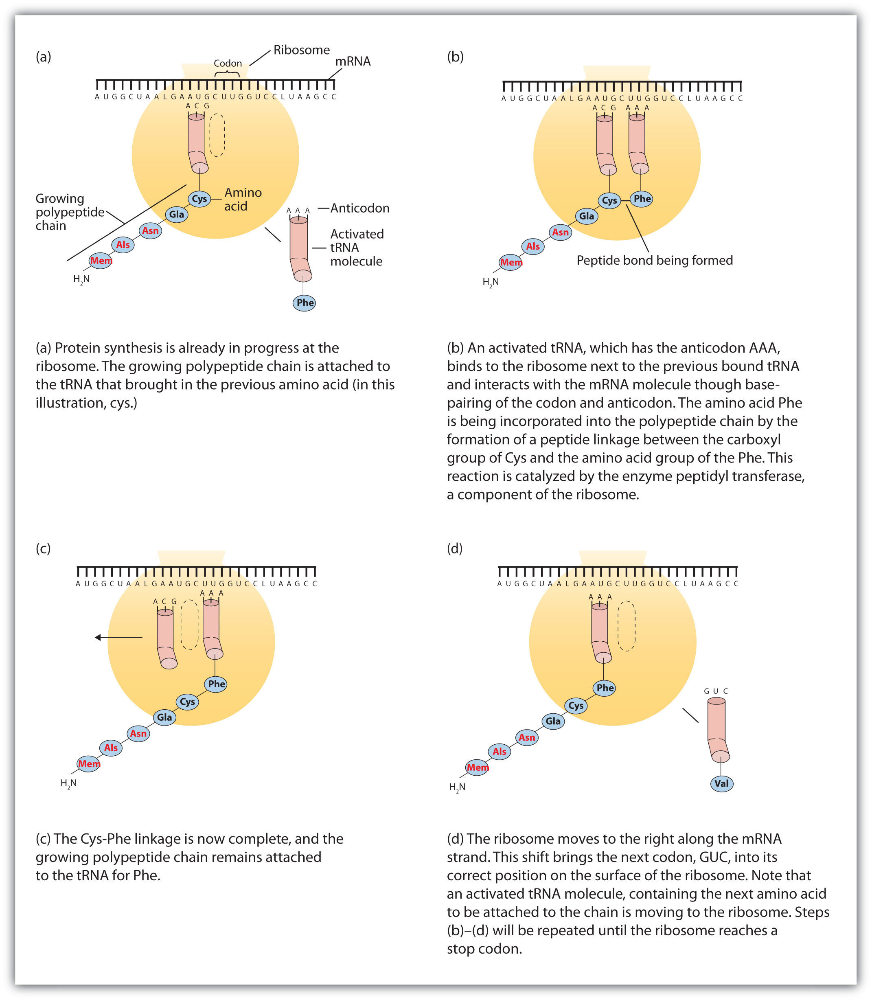Early experimenters were faced with the task of determining which of the 64 possible codons stood for each of the 20 amino acids. The cracking of the genetic code was the joint accomplishment of several well-known geneticists—notably Har Khorana, Marshall Nirenberg, Philip Leder, and Severo Ochoa—from 1961 to 1964. The genetic dictionary they compiled, summarized in Figure 19.14 "The Genetic Code", shows that 61 codons code for amino acids, and 3 codons serve as signals for the termination of polypeptide synthesis (much like the period at the end of a sentence). Notice that only methionine (AUG) and tryptophan (UGG) have single codons. All other amino acids have two or more codons.
Figure 19.14 The Genetic Code
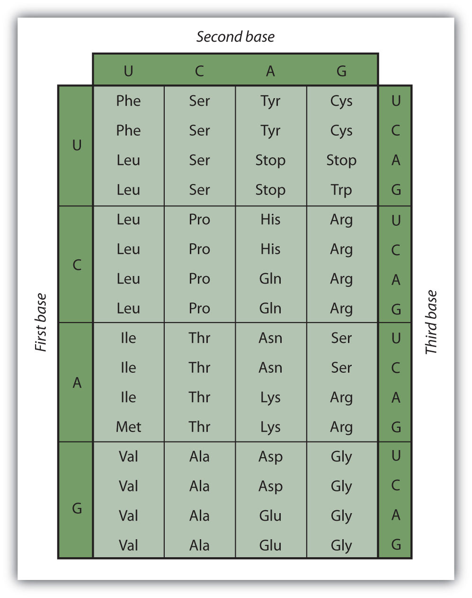A portion of an mRNA molecule has the sequence 5′‑AUGCCACGAGUUGAC‑3′. What amino acid sequence does this code for?
Solution
Use Figure 19.14 "The Genetic Code" to determine what amino acid each set of three nucleotides (codon) codes for. Remember that the sequence is read starting from the 5′ end and that a protein is synthesized starting with the N-terminal amino acid. The sequence 5′‑AUGCCACGAGUUGAC‑3′ codes for met-pro-arg-val-asp.
A portion of an RNA molecule has the sequence 5′‑AUGCUGAAUUGCGUAGGA‑3′. What amino acid sequence does this code for?
Further experimentation threw much light on the nature of the genetic code, as follows:
What are the roles of mRNA and tRNA in protein synthesis?
What is the initiation codon?
What are the termination codons and how are they recognized?
mRNA provides the code that determines the order of amino acids in the protein; tRNA transports the amino acids to the ribosome to incorporate into the growing protein chain.
AUG
UAA, UAG, and UGA; they are recognized by special proteins called release factors, which signal the end of the translation process.
Write the anticodon on tRNA that would pair with each mRNA codon.
Write the codon on mRNA that would pair with each tRNA anticodon.
The peptide hormone oxytocin contains 9 amino acid units. What is the minimum number of nucleotides needed to code for this peptide?
Myoglobin, a protein that stores oxygen in muscle cells, has been purified from a number of organisms. The protein from a sperm whale is composed of 153 amino acid units. What is the minimum number of nucleotides that must be present in the mRNA that codes for this protein?
Use Figure 19.14 "The Genetic Code" to identify the amino acids carried by each tRNA molecule in Exercise 1.
Use Figure 19.14 "The Genetic Code" to identify the amino acids carried by each tRNA molecule in Exercise 2.
Use Figure 19.14 "The Genetic Code" to determine the amino acid sequence produced from this mRNA sequence: 5′‑AUGAGCGACUUUGCGGGAUUA‑3′.
Use Figure 19.14 "The Genetic Code" to determine the amino acid sequence produced from this mRNA sequence: 5′‑AUGGCAAUCCUCAAACGCUGU‑3′
27 nucleotides (3 nucleotides/codon)
1a: phenyalanine; 1b: histidine; 1c: serine; 1d: proline
met-ser-asp-phe-ala-gly-leu
We have seen that the sequence of nucleotides in a cell’s deoxyribonucleic acid (DNA) is what ultimately determines the sequence of amino acids in proteins made by the cell and thus is critical for the proper functioning of the cell. On rare occasions, however, the nucleotide sequence in DNA may be modified either spontaneously (by errors during replication, occurring approximately once for every 10 billion nucleotides) or from exposure to heat, radiation, or certain chemicals. Any chemical or physical change that alters the nucleotide sequence in DNA is called a mutationAny chemical or physical change that alters the nucleotide sequence in DNA.. When a mutation occurs in an egg or sperm cell that then produces a living organism, it will be inherited by all the offspring of that organism.
Common types of mutations include substitution (a different nucleotide is substituted), insertion (the addition of a new nucleotide), and deletion (the loss of a nucleotide). These changes within DNA are called point mutationsA change in which one nucleotide is substituted, added, or deleted. because only one nucleotide is substituted, added, or deleted (Figure 19.15 "Three Types of Point Mutations"). Because an insertion or deletion results in a frame-shift that changes the reading of subsequent codons and, therefore, alters the entire amino acid sequence that follows the mutation, insertions and deletions are usually more harmful than a substitution in which only a single amino acid is altered.
Figure 19.15 Three Types of Point Mutations
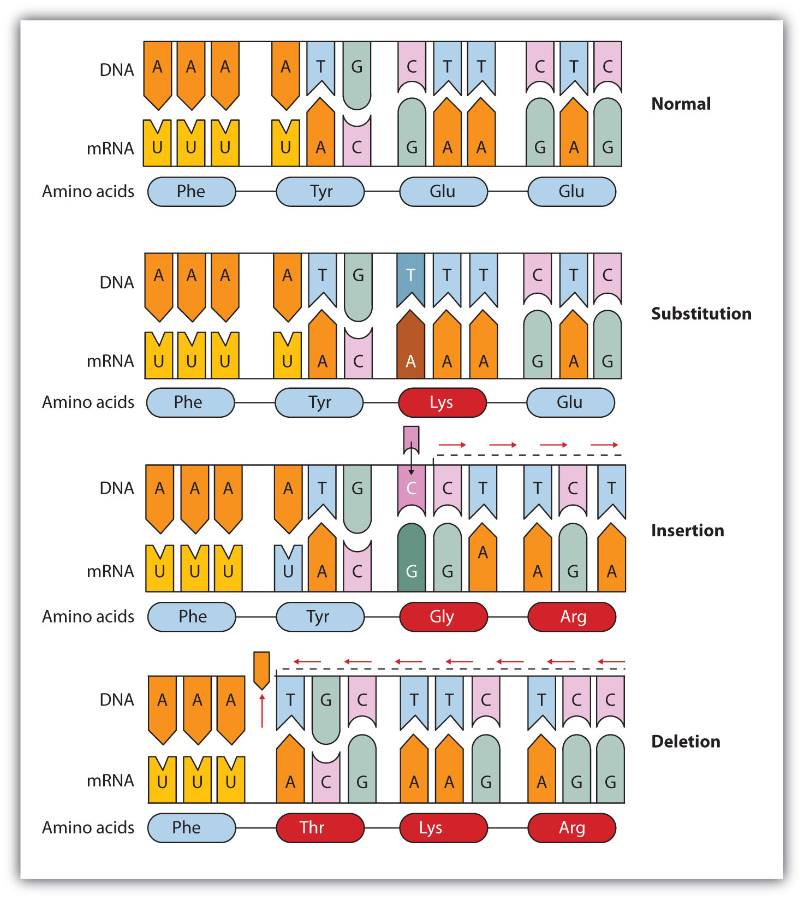The chemical or physical agents that cause mutations are called mutagensA chemical or physical agent that cause mutations.. Examples of physical mutagens are ultraviolet (UV) and gamma radiation. Radiation exerts its mutagenic effect either directly or by creating free radicals that in turn have mutagenic effects. Radiation and free radicals can lead to the formation of bonds between nitrogenous bases in DNA. For example, exposure to UV light can result in the formation of a covalent bond between two adjacent thymines on a DNA strand, producing a thymine dimer (Figure 19.16 "An Example of Radiation Damage to DNA"). If not repaired, the dimer prevents the formation of the double helix at the point where it occurs. The genetic disease xeroderma pigmentosum is caused by a lack of the enzyme that cuts out the thymine dimers in damaged DNA. Individuals affected by this condition are abnormally sensitive to light and are more prone to skin cancer than normal individuals.
Figure 19.16 An Example of Radiation Damage to DNA
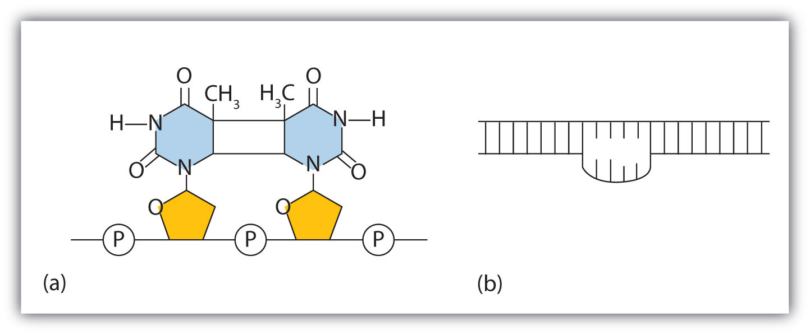(a) The thymine dimer is formed by the action of UV light. (b) When a defect in the double strand is produced by the thymine dimer, this defect temporarily stops DNA replication, but the dimer can be removed, and the region can be repaired by an enzyme repair system.
Sometimes gene mutations are beneficial, but most of them are detrimental. For example, if a point mutation occurs at a crucial position in a DNA sequence, the affected protein will lack biological activity, perhaps resulting in the death of a cell. In such cases the altered DNA sequence is lost and will not be copied into daughter cells. Nonlethal mutations in an egg or sperm cell may lead to metabolic abnormalities or hereditary diseases. Such diseases are called inborn errors of metabolism or genetic diseasesA hereditary condition caused by an altered DNA sequence.. A partial listing of genetic diseases is presented in Table 19.3 "Some Representative Genetic Diseases in Humans and the Protein or Enzyme Responsible", and two specific diseases are discussed in the following sections. In most cases, the defective gene results in a failure to synthesize a particular enzyme.
Table 19.3 Some Representative Genetic Diseases in Humans and the Protein or Enzyme Responsible
| Disease | Responsible Protein or Enzyme |
|---|---|
| alkaptonuria | homogentisic acid oxidase |
| galactosemia | galactose 1-phosphate uridyl transferase, galactokinase, or UDP galactose epimerase |
| Gaucher disease | glucocerebrosidase |
| gout and Lesch-Nyhan syndrome | hypoxanthine-guanine phosphoribosyl transferase |
| hemophilia | antihemophilic factor (factor VIII) or Christmas factor (factor IX) |
| homocystinuria | cystathionine synthetase |
| maple syrup urine disease | branched chain α-keto acid dehydrogenase complex |
| McArdle syndrome | muscle phosphorylase |
| Niemann-Pick disease | sphingomyelinase |
| phenylketonuria (PKU) | phenylalanine hydroxylase |
| sickle cell anemia | hemoglobin |
| Tay-Sachs disease | hexosaminidase A |
| tyrosinemia | fumarylacetoacetate hydrolase or tyrosine aminotransferase |
| von Gierke disease | glucose 6-phosphatase |
| Wilson disease | Wilson disease protein |
PKU results from the absence of the enzyme phenylalanine hydroxylase. Without this enzyme, a person cannot convert phenylalanine to tyrosine, which is the precursor of the neurotransmitters dopamine and norepinephrine as well as the skin pigment melanin.
When this reaction cannot occur, phenylalanine accumulates and is then converted to higher than normal quantities of phenylpyruvate. The disease acquired its name from the high levels of phenylpyruvate (a phenyl ketone) in urine. Excessive amounts of phenylpyruvate impair normal brain development, which causes severe mental retardation.
PKU may be diagnosed by assaying a sample of blood or urine for phenylalanine or one of its metabolites. Medical authorities recommend testing every newborn’s blood for phenylalanine within 24 h to 3 weeks after birth. If the condition is detected, mental retardation can be prevented by immediately placing the infant on a diet containing little or no phenylalanine. Because phenylalanine is plentiful in naturally produced proteins, the low-phenylalanine diet depends on a synthetic protein substitute plus very small measured amounts of naturally produced foods. Before dietary treatment was introduced in the early 1960s, severe mental retardation was a common outcome for children with PKU. Prior to the 1960s, 85% of patients with PKU had an intelligence quotient (IQ) less than 40, and 37% had IQ scores below 10. Since the introduction of dietary treatments, however, over 95% of children with PKU have developed normal or near-normal intelligence. The incidence of PKU in newborns is about 1 in 12,000 in North America.
Every state has mandated that screening for PKU be provided to all newborns.
Several genetic diseases are collectively categorized as lipid-storage diseases. Lipids are constantly being synthesized and broken down in the body, so if the enzymes that catalyze lipid degradation are missing, the lipids tend to accumulate and cause a variety of medical problems. When a genetic mutation occurs in the gene for the enzyme hexosaminidase A, for example, gangliosides cannot be degraded but accumulate in brain tissue, causing the ganglion cells of the brain to become greatly enlarged and nonfunctional. (For more information on gangliosides, see Chapter 17 "Lipids", Section 17.3 "Membranes and Membrane Lipids".) This genetic disease, known as Tay-Sachs disease, leads to a regression in development, dementia, paralysis, and blindness, with death usually occurring before the age of three. There is currently no treatment, but Tay-Sachs disease can be diagnosed in a fetus by assaying the amniotic fluid (amniocentesis) for hexosaminidase A. A blood test can identify Tay-Sachs carriers—people who inherit a defective gene from only one rather than both parents—because they produce only half the normal amount of hexosaminidase A, although they do not exhibit symptoms of the disease.
More than 3,000 human diseases have been shown to have a genetic component, caused or in some way modulated by the person’s genetic composition. Moreover, in the last decade or so, researchers have succeeded in identifying many of the genes and even mutations that are responsible for specific genetic diseases. Now scientists have found ways of identifying and isolating genes that have specific biological functions and placing those genes in another organism, such as a bacterium, which can be easily grown in culture. With these techniques, known as recombinant DNA technology, the ability to cure many serious genetic diseases appears to be within our grasp.
Isolating the specific gene or genes that cause a particular genetic disease is a monumental task. One reason for the difficulty is the enormous amount of a cell’s DNA, only a minute portion of which contains the gene sequence. Thus, the first task is to obtain smaller pieces of DNA that can be more easily handled. Fortunately, researchers are able to use restriction enzymes (also known as restriction endonucleases), discovered in 1970, which are enzymes that cut DNA at specific, known nucleotide sequences, yielding DNA fragments of shorter length. For example, the restriction enzyme EcoRI recognizes the nucleotide sequence shown here and cuts both DNA strands as indicated:
Once a DNA strand has been fragmented, it must be cloned; that is, multiple identical copies of each DNA fragment are produced to make sure there are sufficient amounts of each to detect and manipulate in the laboratory. Cloning is accomplished by inserting the individual DNA fragments into phages (bacterial viruses) that can enter bacterial cells and be replicated. When a bacterial cell infected by the modified phage is placed in an appropriate culture medium, it forms a colony of cells, all containing copies of the original DNA fragment. This technique is used to produce many bacterial colonies, each containing a different DNA fragment. The result is a DNA library, a collection of bacterial colonies that together contain the entire genome of a particular organism.
The next task is to screen the DNA library to determine which bacterial colony (or colonies) has incorporated the DNA fragment containing the desired gene. A short piece of DNA, known as a hybridization probe, which has a nucleotide sequence complementary to a known sequence in the gene, is synthesized, and a radioactive phosphate group is added to it as a “tag.” You might be wondering how researchers are able to prepare such a probe if the gene has not yet been isolated. One way is to use a segment of the desired gene isolated from another organism. An alternative method depends on knowing all or part of the amino acid sequence of the protein produced by the gene of interest: the amino acid sequence is used to produce an approximate genetic code for the gene, and this nucleotide sequence is then produced synthetically. (The amino acid sequence used is carefully chosen to include, if possible, many amino acids such as methionine and tryptophan, which have only a single codon each.)
After a probe identifies a colony containing the desired gene, the DNA fragment is clipped out, again using restriction enzymes, and spliced into another replicating entity, usually a plasmid. Plasmids are tiny mini-chromosomes found in many bacteria, such as Escherichia coli (E. coli). A recombined plasmid would then be inserted into the host organism (usually the bacterium E. coli), where it would go to work to produce the desired protein.
Proponents of recombinant DNA research are excited about its great potential benefits. An example is the production of human growth hormone, which is used to treat children who fail to grow properly. Formerly, human growth hormone was available only in tiny amounts obtained from cadavers. Now it is readily available through recombinant DNA technology. Another gene that has been cloned is the gene for epidermal growth factor, which stimulates the growth of skin cells and can be used to speed the healing of burns and other skin wounds. Recombinant techniques are also a powerful research tool, providing enormous aid to scientists as they map and sequence genes and determine the functions of different segments of an organism’s DNA.
In addition to advancements in the ongoing treatment of genetic diseases, recombinant DNA technology may actually lead to cures. When appropriate genes are successfully inserted into E. coli, the bacteria can become miniature pharmaceutical factories, producing great quantities of insulin for people with diabetes, clotting factor for people with hemophilia, missing enzymes, hormones, vitamins, antibodies, vaccines, and so on. Recent accomplishments include the production in E. coli of recombinant DNA molecules containing synthetic genes for tissue plasminogen activator, a clot-dissolving enzyme that can rescue heart attack victims, as well as the production of vaccines against hepatitis B (humans) and hoof-and-mouth disease (cattle).
Scientists have used other bacteria besides E. coli in gene-splicing experiments and also yeast and fungi. Plant molecular biologists use a bacterial plasmid to introduce genes for several foreign proteins (including animal proteins) into plants. The bacterium is Agrobacterium tumefaciens, which can cause tumors in many plants but which can be treated so that its tumor-causing ability is eliminated. One practical application of its plasmids would be to enhance a plant’s nutritional value by transferring into it the gene necessary for the synthesis of an amino acid in which the plant is normally deficient (for example, transferring the gene for methionine synthesis into pinto beans, which normally do not synthesize high levels of methionine).
Restriction enzymes have been isolated from a number of bacteria and are named after the bacterium of origin. EcoRI is a restriction enzyme obtained from the R strain of E. coli. The roman numeral I indicates that it was the first restriction enzyme obtained from this strain of bacteria.
A portion of the coding strand of a gene was found to have the sequence 5′‑ATGAGCGACTTTCGCCCATTA‑3′. A mutation occurred in the gene, making the sequence 5′‑ATGAGCGACCTTCGCCCATTA‑3′.
A portion of the coding strand of a gene was found to have the sequence 5′‑ATGGCAATCCTCAAACGCTGT‑3′. A mutation occurred in the gene, making the sequence 5′‑ATGGCAATCCTCAACGCTGT‑3′.
For each genetic disease, indicate which enzyme is lacking or defective and the characteristic symptoms of the disease.
Infectious diseases caused by viruses include the common cold, influenza, and acquired immunodeficiency syndrome (AIDS) and are among the most significant health problems in our society. VirusesAn infectious agent that is much smaller and simpler than bacteria. are infectious agents far smaller and simpler than bacteria that are composed of a tightly packed central core of nucleic acids enclosed in a protective shell. The shell consists of layers of one or more proteins and may also have lipid or carbohydrate molecules on the surface. Because of their simplicity, viruses must invade the cells of other organisms to be able to reproduce.
Viruses are visible only under an electron microscope. They come in a variety of shapes, ranging from spherical to rod shaped. The fact that they contain either deoxyribonucleic acid (DNA) or ribonucleic acid (RNA)—but never both—allows them to be divided into two major classes: DNA viruses and RNA viruses (Figure 19.17 "Viruses").
Figure 19.17 Viruses
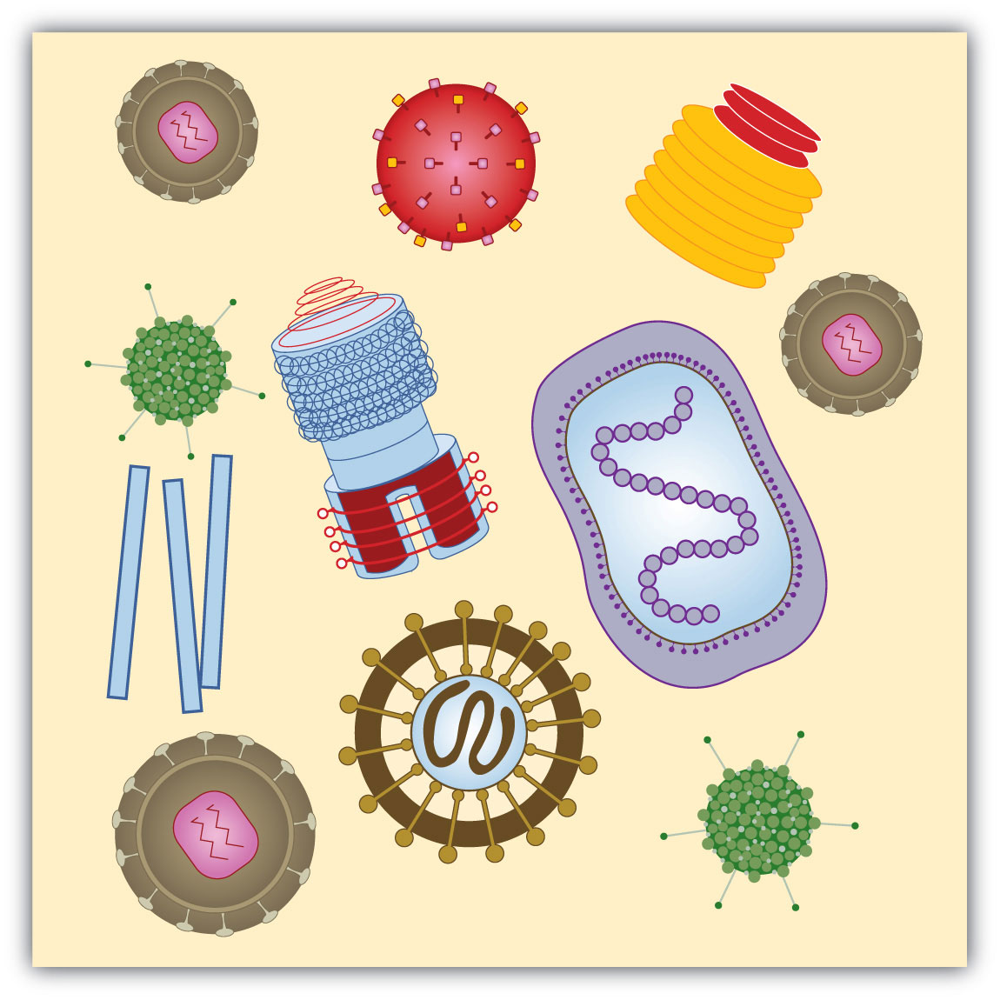Viruses come in a variety of shapes that are determined by their protein coats.
A DNA virus enters a host cell and induces the cell to replicate the viral DNA and produce viral proteins. These proteins and DNA assemble into new viruses that are released by the host cell, which may die in the process. The new viruses can then invade other cells and repeat the cycle. Cell death and the production of new viruses account for the symptoms of viral infections.
Most RNA viruses use their nucleic acids in much the same way as the DNA viruses, penetrating a host cell and inducing it to replicate the viral RNA and synthesize viral proteins. The new RNA strands and viral proteins are then assembled into new viruses. Some RNA viruses, however, called retrovirusesAn RNA virus that directs the synthesis of a DNA copy in the host cell. (Figure 19.18 "Life Cycle of a Retrovirus"), synthesize DNA in the host cell, in a process that is the reverse of the DNA-to-RNA transcription that normally occurs in cells. (See Figure 19.10 "A Schematic Diagram of RNA Transcription from a DNA Template" for the transcription process.) The synthesis of DNA from an RNA template is catalyzed by the enzyme reverse transcriptase.
Figure 19.18 Life Cycle of a Retrovirus
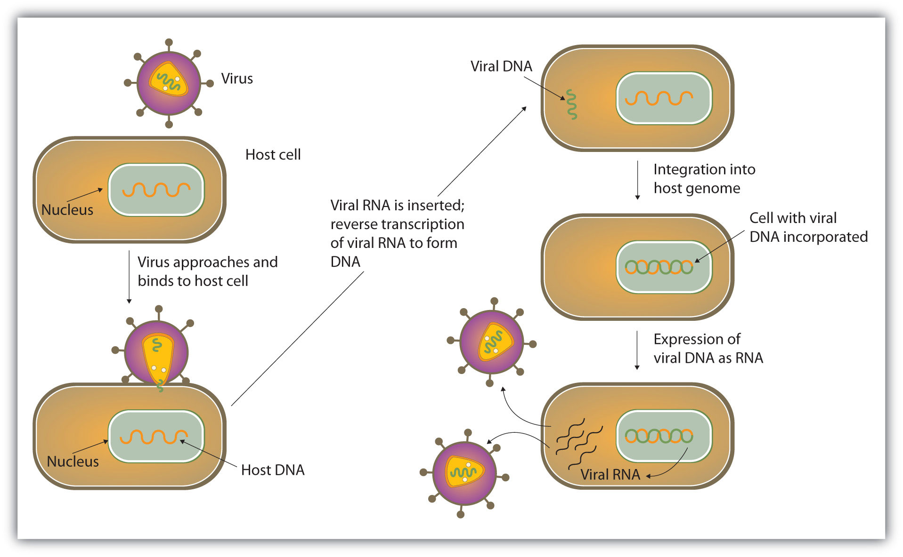Perhaps the best-known retrovirus is the human immunodeficiency virus (HIV) that causes AIDS. It is estimated that there are about 33 million people worldwide testing positive for HIV infections, many of whom have developed AIDS as a result. In 2007 alone, 2.7 million people became infected with HIV, and in the same year, AIDS caused the deaths of approximately 2 million people. The virus uses glycoproteins on its outer surface to attach to receptors on the surface of T cells, a group of white blood cells that normally help protect the body from infections. The virus then enters the T cell, where it replicates and eventually destroys the cell. With his or her T cells destroyed, the AIDS victim is at increased risk of succumbing to pneumonia or other infectious diseases.
In 1987, azidothymidine (AZT, also known as zidovudine or the brand name Retrovir) became the first drug approved for the treatment of AIDS. It works by binding to reverse transcriptase in place of deoxythymidine triphosphate, after which, because AZT does not have a 3′OH group, further replication is blocked. In the past 10 years, several other drugs have been approved that also act by inhibiting the viral reverse transcriptase.
As part of HIV reproduction in an infected cell, newly synthesized viral proteins must be cut by a specific viral-induced HIV protease to form shorter proteins. An intensive research effort was made to design drugs that specifically inhibited this proteolytic enzyme, without affecting the proteolytic enzymes (like trypsin) that are needed by the host. In December 1995, saquinavir (brand names Invirase and Fortovase) was approved for the treatment of AIDS. This drug represented a new class of drugs known as protease inhibitors. Other protease inhibitors soon gained Food and Drug Administration (FDA) approval: ritonavir (Norvir), indinavir (Crixivan), and nelfinavir (Viracept).
Raltegravir (Isentress) is a newer anti-AIDS drug that was approved by the FDA in October 2007. This drug inhibits the integrase enzyme that is needed to integrate the HIV DNA into cellular DNA, an essential step in the production of more HIV particles.
A major problem in treating HIV infections is that the virus can become resistant to any of these drugs. One way to combat the problem has been to administer a “cocktail” of drugs, typically a combination of two reverse transcriptase inhibitors along with a protease inhibitor. These treatments can significantly reduce the amount of HIV in an infected person.
Describe the general structure of a virus.
How does a DNA virus differ from an RNA virus?
Why is HIV known as a retrovirus?
A virus consists of a central core of nucleic acid enclosed in a protective shell of proteins. There may be lipid or carbohydrate molecules on the surface.
A DNA virus has DNA as its genetic material, while an RNA virus has RNA as its genetic material.
In a cell, a retrovirus synthesizes a DNA copy of its RNA genetic material.
A genetics counselor works with individuals and families who have birth defects or genetic disorders or a family history of a disease, such as cancer, with a genetic link. A genetics counselor may work in a variety of health-care settings (such as a hospital) to obtain family medical and reproductive histories; explain how genetic conditions are inherited; explain the causes, diagnosis, and care of these conditions; interpret the results of genetic tests; and aid the individual or family in making decisions regarding genetic diseases or conditions. A certified genetics counselor must obtain a master’s degree from an accredited program. Applicants to these graduate programs usually have an undergraduate degree in biology, psychology, or genetics.
Source: Photo courtesy of the United States National Institutes for Health, http://commons.wikimedia.org/wiki/File:Geneticcounseling.jpg.
Describe how a DNA virus invades and destroys a cell.
What HIV enzyme does AZT inhibit?
What HIV enzyme does raltegravir inhibit?
The DNA virus enters a host cell and induces the cell to replicate the viral DNA and produce viral proteins. These proteins and DNA assemble into new viruses that are released by the host cell, which may die in the process.
reverse transcriptase
To ensure that you understand the material in this chapter, you should review the meanings of the bold terms in the following summary and ask yourself how they relate to the topics in the chapter.
A cell’s hereditary information is encoded in chromosomes in the cell’s nucleus. Each chromosome is composed of proteins and deoxyribonucleic acid (DNA). The chromosomes contain smaller hereditary units called genes, which are relatively short segments of DNA. The hereditary information is expressed or used through the synthesis of ribonucleic acid (RNA). Both nucleic acids—DNA and RNA—are polymers composed of monomers known as nucleotides, which in turn consist of phosphoric acid (H3PO4), a nitrogenous base, and a pentose sugar.
The two types of nitrogenous bases most important in nucleic acids are purines—adenine (A) and guanine (G)—and pyrimidines—cytosine (C), thymine (T), and uracil (U). DNA contains the nitrogenous bases adenine, cytosine, guanine, and thymine, while the bases in RNA are adenine, cytosine, guanine, and uracil. The sugar in the nucleotides of RNA is ribose; the one in DNA is 2-deoxyribose. The sequence of nucleotides in a nucleic acid defines the primary structure of the molecule.
RNA is a single-chain nucleic acid, whereas DNA possesses two nucleic-acid chains intertwined in a secondary structure called a double helix. The sugar-phosphate backbone forms the outside the double helix, with the purine and pyrimidine bases tucked inside. Hydrogen bonding between complementary bases holds the two strands of the double helix together; A always pairs with T and C always pairs with G.
Cell growth requires replication, or reproduction of the cell’s DNA. The double helix unwinds, and hydrogen bonding between complementary bases breaks so that there are two single strands of DNA, and each strand is a template for the synthesis of a new strand. For protein synthesis, three types of RNA are needed: messenger RNA (mRNA), ribosomal RNA (rRNA), and transfer RNA (tRNA). All are made from a DNA template by a process called transcription. The double helix uncoils, and ribonucleotides base-pair to the deoxyribonucleotides on one DNA strand; however, RNA is produced using uracil rather than thymine. Once the RNA is formed, it dissociates from the template and leaves the nucleus, and the DNA double helix reforms.
Translation is the process in which proteins are synthesized from the information in mRNA. It occurs at structures called ribosomes, which are located outside the nucleus and are composed of rRNA and protein. The 64 possible three-nucleotide combinations of the 4 nucleotides of DNA constitute the genetic code that dictates the sequence in which amino acids are joined to make proteins. Each three-nucleotide sequence on mRNA is a codon. Each kind of tRNA molecule binds a specific amino acid and has a site containing a three-nucleotide sequence called an anticodon.
The general term for any change in the genetic code in an organism’s DNA is mutation. A change in which a single base is substituted, inserted, or deleted is a point mutation. The chemical and/or physical agents that cause mutations are called mutagens. Diseases that occur due to mutations in critical DNA sequences are referred to as genetic diseases.
Viruses are infectious agents composed of a tightly packed central core of nucleic acids enclosed by a protective shell of proteins. Viruses contain either DNA or RNA as their genetic material but not both. Some RNA viruses, called retroviruses, synthesize DNA in the host cell from their RNA genome. The human immunodeficiency virus (HIV) causes acquired immunodeficiency syndrome (AIDS).
For this nucleic acid segment,

For this nucleic acid segment,

One of the key pieces of information that Watson and Crick used in determining the secondary structure of DNA came from experiments done by E. Chargaff, in which he studied the nucleotide composition of DNA from many different species. Chargaff noted that the molar quantity of A was always approximately equal to the molar quantity of T, and the molar quantity of C was always approximately equal to the molar quantity of G. How were Chargaff’s results explained by the structural model of DNA proposed by Watson and Crick?
Suppose Chargaff (see Exercise 3) had used RNA instead of DNA. Would his results have been the same; that is, would the molar quantity of A approximately equal the molar quantity of T? Explain.
In the DNA segment
5′‑ATGAGGCATGAGACG‑3′ (coding strand) 3′‑TACTCCGTACTCTGC‑5′ (template strand)In the DNA segment
5′‑ATGACGGTTTACTAAGCC‑3′ (coding strand) 3′‑TACTGCCAAATGATTCGG‑5′ (template strand)A hypothetical protein has a molar mass of 23,300 Da. Assume that the average molar mass of an amino acid is 120.
Bradykinin is a potent peptide hormone composed of nine amino acids that lowers blood pressure.
A particular DNA coding segment is ACGTTAGCCCCAGCT.
What amino acid sequence results from each of the following mutations?
A particular DNA coding segment is TACGACGTAACAAGC.
What amino acid sequence results from each of the following mutations?
Two possible point mutations are the substitution of lysine for leucine or the substitution of serine for threonine. Which is likely to be more serious and why?
Two possible point mutations are the substitution of valine for leucine or the substitution of glutamic acid for histidine. Which is likely to be more serious and why?
In the DNA structure, because guanine (G) is always paired with cytosine (C) and adenine (A) is always paired with thymine (T), you would expect to have equal amounts of each.
substitution of lysine for leucine because you are changing from an amino acid with a nonpolar side chain to one that has a positively charged side chain; both serine and threonine, on the other hand, have polar side chains containing the OH group.